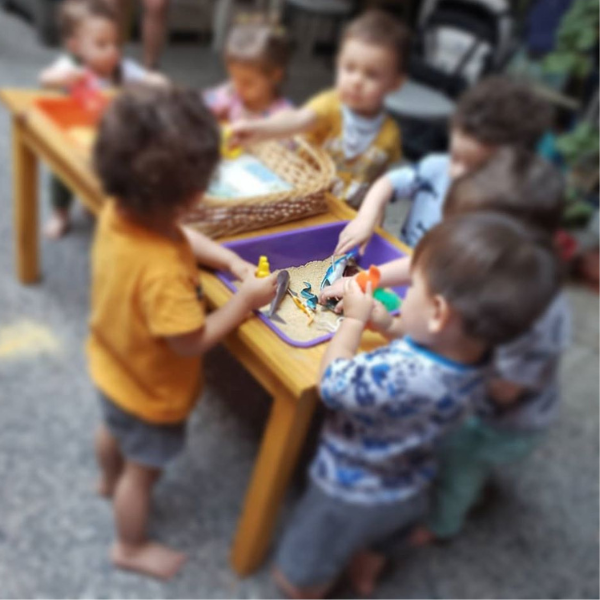
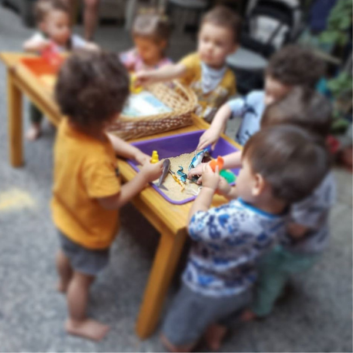

Aninaciones, Talleres y Espectáculos
Te invitamos a descubrir nuestras animaciones, talleres y espectáculos, donde el arte, el juego y el cuidado del planeta se combinan para crear experiencias inolvidables. Cada evento está diseñado con creatividad y dedicación, adaptándose a distintas edades, intereses y necesidades. Conocé los detalles que hacen de cada una de nuestras propuestas una ocasión especial, inspirando, divirtiendo y conectando con los valores de Universo Bellotas.
Animaciones

Animaciones 1 a 3 años
Ronda Bellotas: Animación para los más pequeños. Creamos un espacio único de celebración pensado para los más pequeños, donde el arte, el juego y el respeto por el medio ambiente son protagonistas. Nuestra propuesta sensorial está diseñada especialmente para niños de 1 a 3 años, respetando sus ritmos, intereses y etapas de desarrollo....
Leer MásAnimaciones 3 a 5 años
Nuestras animaciones para niños y niñas de 3 a 5 años fomentan la magia del juego y la imaginación. Cada propuesta combina diversión, aprendizaje y respeto por el medio ambiente, creando experiencias únicas. Acompañamos esta etapa con actividades que estimulan la curiosidad y la sociabilidad. ¿Listos para descubrir más?.
Leer Más
Talleres
Taller de Reciclado
Ronda Bellotas: Animación para los más pequeños (1 a 3 años) En Ronda Bellotas, creamos un espacio único de celebración pensado para los más pequeños, donde el arte, el juego y el respeto por el medio ambiente son protagonistas. Nuestra propuesta sensorial está diseñada especialmente para niños de 1 a 3 años, respetando sus ritmos, intereses y etapas de desarrollo....
Leer MásEspectáculos
Selvaventuras
Un show para vivir una aventura en la selva misionera, donde descubrimos los misterios que esconde su flora y fauna para protegerla. Entre leyendas, títeres, música y juegos.....
Leer MásEcoPayasadas
Un show con todos los colores del circo y la diversión, de la mano de dos payasas que son fanáticas de los juegos, acrobacias y burbujas. Nos enseñarán lo divertido que puede ser cuidar el medio ambiente reciclando.
Leer Más